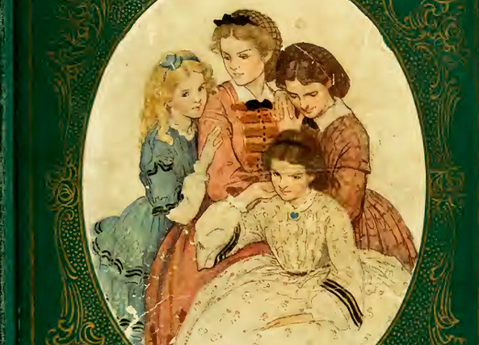

Labirintos de Luto e Redenção

No coração da literatura clássica, “Mulherzinhas” de Louisa May Alcott permanece um farol de progresso e empoderamento feminino. Sob o manto de um simples guia de etiqueta, este artigo desvenda as camadas de subversão e desafio social tecidas habilmente na narrativa de Alcott. Algumas pessoas pareciam ter toda a luz do sol; outras, toda a sombra.
Introdução:
Em um mundo onde as mulheres eram vistas mais como enfeites de salão do que como seres pensantes, “Mulherzinhas” surgiu como um sussurro revolucionário que se transformou em um grito de independência. Este artigo se aprofunda nas páginas de Louisa May Alcott para revelar uma revolução disfarçada, uma que desafia as convenções e celebra a individualidade feminina.
O Contexto de “Mulherzinhas”
Publicado durante a Guerra Civil Americana, “Mulherzinhas” oferece uma visão íntima da vida doméstica, mas com uma subversão sutil das normas de gênero da época. Alcott apresenta suas heroínas não apenas como modelos de virtude, mas também como arquitetas de seus próprios destinos.
As Irmãs March: Ícones de Autenticidade
- Jo March: A personificação da independência e da rebeldia, Jo rejeita o casamento tradicional e busca a realização na escrita, desafiando as expectativas de seu gênero.
- Meg March: Embora siga um caminho mais convencional, Meg representa a dignidade e a força na maternidade e no casamento, escolhendo o amor verdadeiro em vez de vantagens financeiras.
- Beth March: A alma gentil do grupo, Beth, com sua música e bondade, ensina que a força vem em várias formas, inclusive na quietude.
- Amy March: A mais jovem, Amy, evolui de uma caçadora de fortunas para uma artista que valoriza a expressão pessoal acima das convenções sociais.
Etiqueta Como Ferramenta de Empoderamento
Longe de ser um mero manual de boas maneiras, “Mulherzinhas” usa a etiqueta para questionar o status quo. As irmãs March utilizam a etiqueta para moldar suas vidas de maneira que reflita seus verdadeiros eu’s, não as expectativas impostas a elas.
A Relevância Contemporânea de “Mulherzinhas”
A luta das irmãs March por autenticidade e autoexpressão ressoa até hoje. Em uma era de hashtags e movimentos sociais, “Mulherzinhas” continua a inspirar leitores a buscar a igualdade e a celebrar a individualidade.
Conclusão:
“Mulherzinhas” não é apenas um clássico atemporal; é um manifesto que continua a inspirar gerações. Este artigo revela como, entre lições de etiqueta e cortesias, Alcott teceu uma tapeçaria de liberdade e escolha, uma que continua a ser relevante em nossa busca contínua por igualdade e respeito.
Este artigo é um convite para redescobrir “Mulherzinhas” não como um guia de etiqueta, mas como um guia para a vida, cheio de lições sobre coragem, amor e, acima de tudo, a liberdade de ser quem somos.